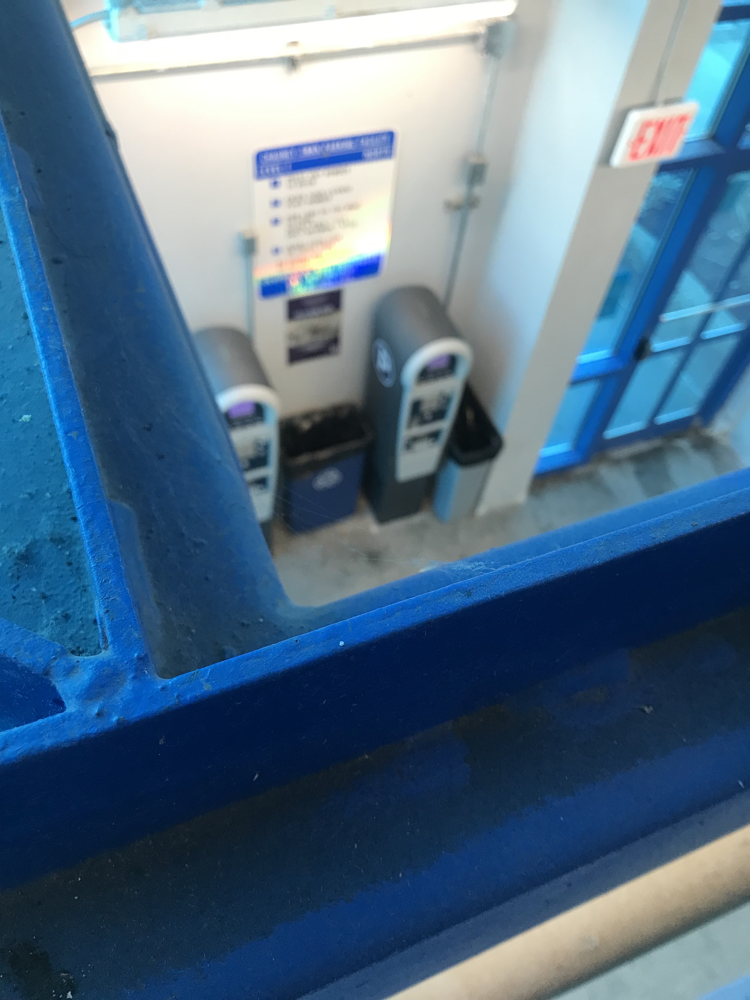
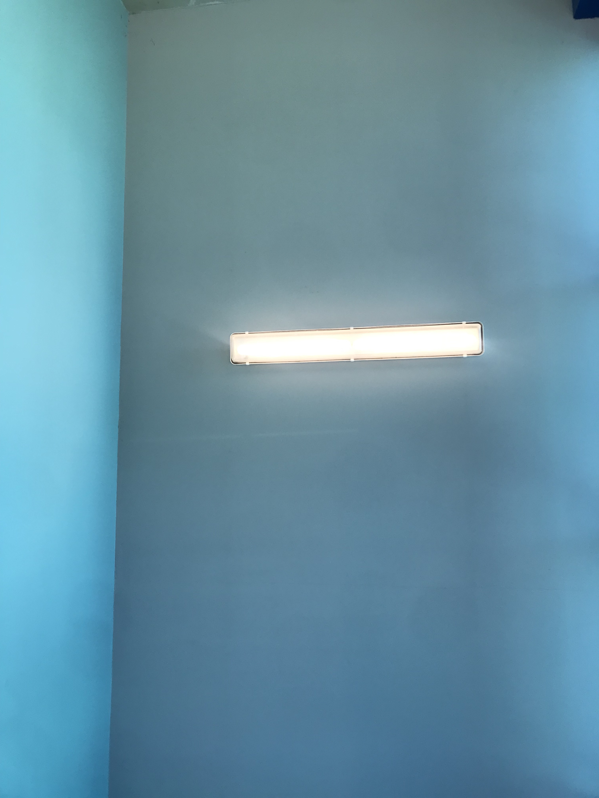
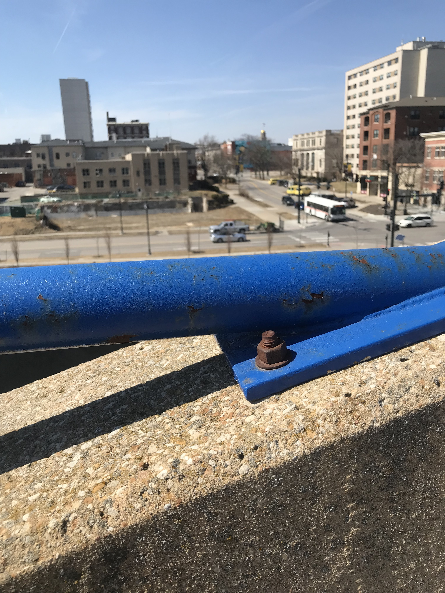

The Parking Space
This piece is best experienced using headphones
Listen & Read
Stream the full 27 min piece
Choose your own adventure
Image & Video

An image taken on a stairwell looking down on the ticket machines that can be used to purchase a parking ticket. The view of the machine is partially obscured by a bright blue metal beam that runs in a diagonal from the bottom left of the photo to the top right.

An image of a horizontal florecant light fixture mounted on the wall of the stairwell. It is close to the corner of the wall which is painted in a teal blue.

An image taken from the top level of the parking lot. The foreground is in focus while the background is blurry. The blurry background contains a view of the street, in which there is a bus picking up riders.
Location & Access
You may walk, bike, or drive to the parking ramp. Having a car is not necessary for the experience. If you drive, we recommend you park your car on the Levels 1, 2, or 3. Parking is $0.75 an hour. The space is wheelchair accessible.
We acknowledge the land known as Iowa City belongs to the indigenous people of the Sac and Fox of the Iowa in Mississippi, Kickapoo, Omaha, Sioux, Otoe, Iowa, Ponca, Winnebago, Menomiee, Osage, Potawatomi, Ottawa, Missouri. We invite you to consider what your understanding of "public space" means as you listen.
Survey & Feedback
If you are on instagram take a picture and tag us: @the_parking_space